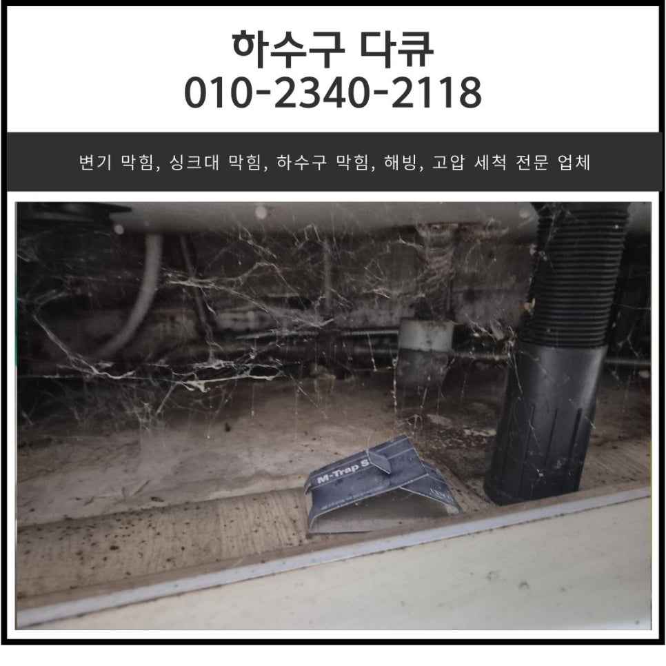
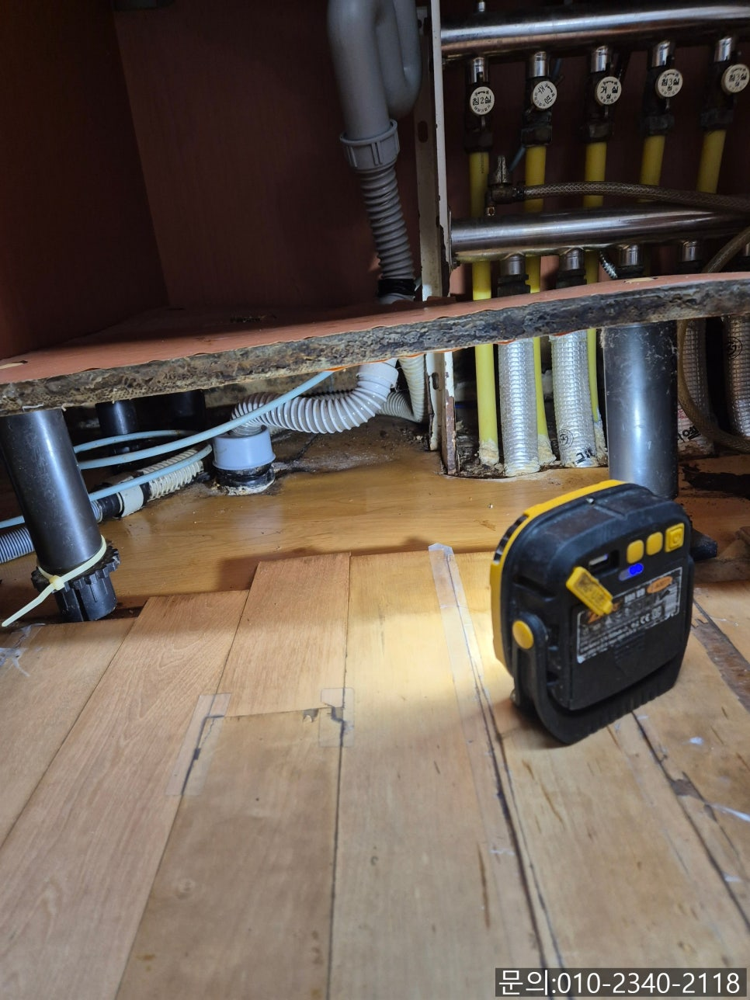
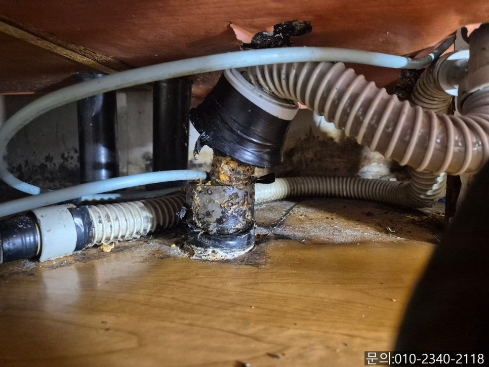
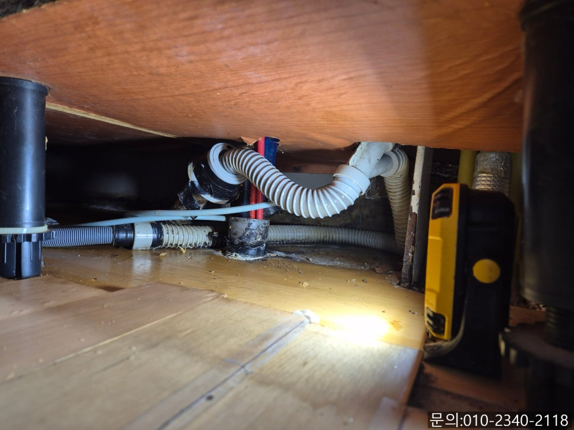
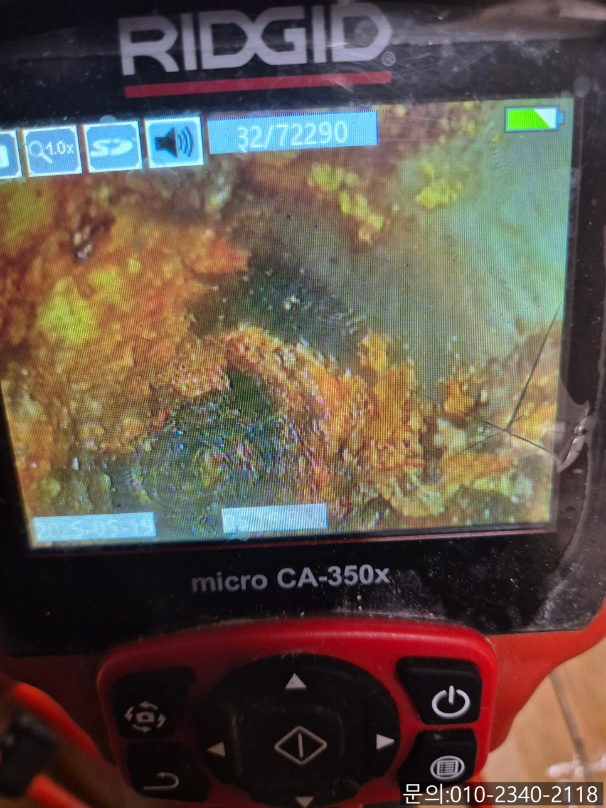
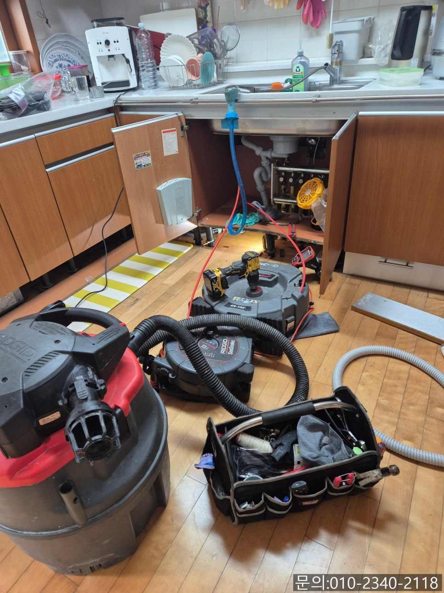
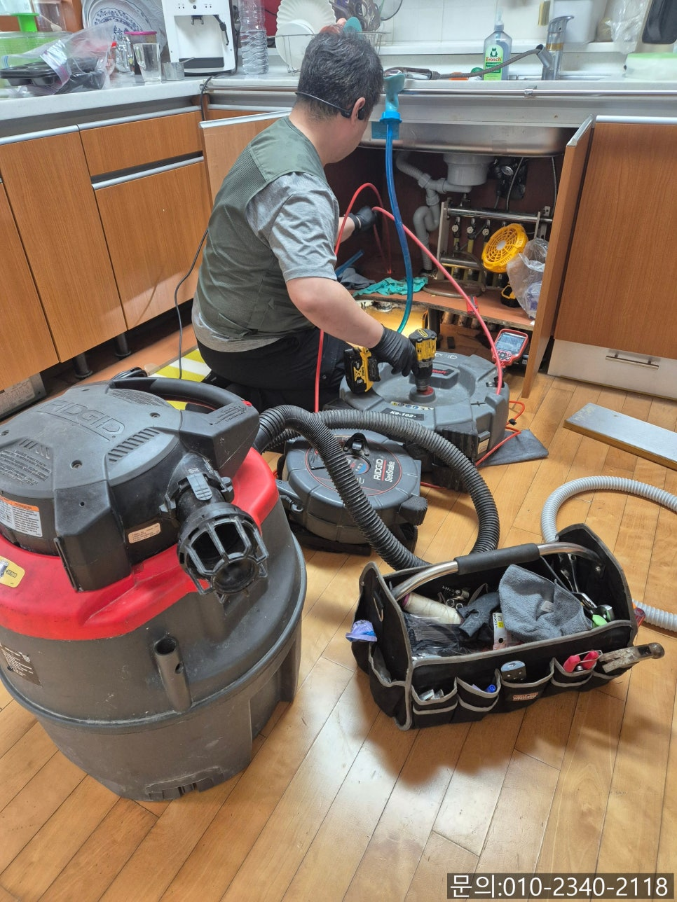

🏠 원곡동 싱크대 막힘 안산 고잔동 빌라 하수구 역류 뚫어주는 전문 업체
안산 싱크대막힘 전문 시공 후기

📋 작업 개요
- 위치: 안산
- 서비스 유형: 싱크대막힘, 하수구막힘, 배관막힘, 역류해결, 뚫는업체, 배관청소
- 작업 일시: 2025. 5. 21. 22:05
- 업체명: 하수구수사대 (010-5615-2118)
🔍 문제 상황
안녕하세요.
원곡동 싱크대 막힘, 안산 고잔동 빌라 하수구 역류 뚫어주는 전문 업체 하수구 다큐입니다.
오늘 소개해 드릴 작업은 원곡동 싱크대 막힘 현장인데요.
싱크대에서 물을 많이 사용하게 되면 배관에서 거꾸로 물이 올라온다고 전화를 주셨습니다.
싱크대 막힘으로 인해 궁금하신 점을 여러 가지 문의하시면서 셀프로 뚫는 방법을 물어보셨어요.
저도 고객님들께 셀프로 뚫는 방법을 알려드릴 수 있으면 좋겠지만 이미 배관에서 역류가 일어나고 있는 상황의 경우 내부에 많은 양의 이물질이 꽉 막고 있는 상태이다 보니 전문적인 장비를 사용해 이물질을 완전하게 제거해 줘야 해결할 수 있어 알려드릴 수 있는 게 없었습니다.

🔎 원인 분석
💡 전문가 진단: 정밀 진단 장비를 사용하여 슬러지의 고착 여부를 판명하고 타격/세척 작업을 실시했습니다.
셀프로 하수구 뚫는 방법을 검색해 보면 나오는 베이킹 소다나 배수구 클리너의 경우 원곡동 싱크대 막힘이 발생하기 전에 예방 차원에서 사용하는 방법이라 역류가 발생했을 땐 아무런 효과가 없는 점 참고해 주세요.
원곡동 싱크대 막힘 고객님과 통화를 하면서 비용에 대해 부담을 갖고 계신다는 것을 알게 되었습니다.
아무래도 현장을 직접 확인해 봐야 정확한 청소 비용을 알 수 있다 보니 무료로 방문해 견적을 진행하기로 했어요.
하수구 역류 뚫어주는 전문 업체 하수구 다큐가 방문한 곳은 안산 고잔동에 위치한 빌라인데요.
막힘의 원인을 파악하고 비용을 안내해 드리기 위해 내시경 카메라를 이용해 배관 내부를 점검해 보기로 했습니다.
싱크대와 연결되어 있는 주름 배관을 제거하는데 주름 사이사이로 기름 슬러지가 붙어있는 것을 확인할 수 있었어요.
내시경 카메라는 사람의 눈으로 직접 확인할 수 없는 배관 내부로 진입해 촬영해 주는 장비로 화면을 통해 막힘의 원인을 파악하게 됩니다.

🔧 작업 과정
내시경 카메라로 배관 내부를 점검해 보니 걱정했던 것과는 다르게 입구까지 막힌 상태는 아니었어요.
내부에 기름 슬러지들이 많이 붙어있고, 조금 깊은 곳으로 진입해야 쌓인 이물질로 인해 막혀있는 것을 확인할 수 있었습니다.
안산 고잔동 빌라 하수구 역류 뚫어주는 전문 업체 하수구 다큐는 고객님께 막힘의 원인과 배관의 상태에 대해 내시경 카메라로 촬영하면서 설명해 드렸어요.
그리고 작업 계획과 배관 청소 작업으로 인해 발생되는 비용에 대해서도 말씀드렸더니, 주변에서 비싸다고 들어서 걱정했는데 걱정했던 것만큼 비싸지 않아서 다행이라며 빌라 하수구 역류를 해결해달라고 하셨습니다.
아무래도 가정에서 하수구 막힘이 발생하는 일이 자주 발생하는 것이 아니다 보니 비용을 걱정하시는 분들이 많은데요.
하수구 다큐는 무료로 방문 견적을 진행해 드리기 때문에 막힘의 원인을 파악하고 비용까지 확인하신 다음 마음에 드시면 작업을 진행하시고, 아니면 굳이 작업을 의뢰하지 않으셔도 됩니다.
출장비도 없으니 부담 없으시겠죠?
배관을 막고 있는 기름 슬러지를 제거하기 위해 사용하게 될 장비는 플렉스 샤프트입니다.
플렉스 샤프트 장비는 노즐 끝에 달려있는 체인이 배관 내부로 진입해 본체에 연결되어 있는 전동드릴의 회전하는 힘을 전달받아 빠르게 회전하면서 기름 슬러지를 타격해 제거하는 작업을 진행합니다.
내시경으로 이물질의 위치를 파악하면서 꼼꼼하게 작업을 진행합니다.
여러 차례 반복해서 작업을 진행하자 쌓여있던 기름 슬러지가 제거되고 깨끗해진 배관 내부를 확인할 수 있었습니다.


✅ 작업 완료
마지막으로 물을 흘려보내면서 막힘없이 물이 흘러내려 가는 것을 확인하고 작업을 마무리할 수 있었습니다.
가정에서 물이 흘러가는 곳이라면 어디든 막힘이 발생할 수 있습니다.
지금 하수구 막힘으로 고민하고 계신다면 하수구 다큐와 함께 해결해보세요.




⚠️ 주방 싱크대 배관 막힘 예방 수칙
- ✅ 기름기가 묻은 식기나 프라이팬은 설거지 전 키친타올로 반드시 기름때를 닦아내세요.
- ✅ 주기적으로 싱크대 개수대에 뜨거운 물을 가득 받아 한 번에 내려 배관 내부 기름을 씻어내세요.
- ✅ 배수구 거름망을 미세한 필터로 사용하시고 음식물 찌꺼기가 틈으로 새어 들지 않게 관리하세요.
- ✅ 베이킹소다와 식초를 뜨거운 물과 함께 일주일에 한 번씩 부어주면 배관 살균과 막힘 예방에 좋습니다.
💡 핵심 정리
- 확실한 장비 작업(내시경 점검 및 샤프트 스케일링)으로 원인을 뿌리 뽑습니다.
- 작업 후 1년 이내에 동일한 부위 재발 시 100% 무상 A/S 서비스를 보장합니다.
- 서울 · 경기 · 인천 전 지역에 24시간 언제든 긴급 출동할 수 있도록 항시 대기 중입니다.
❓ 자주 묻는 질문 (FAQ)
🚨 안산 싱크대막힘 문제로 고민이신가요?
정확한 원인 진단과 확실한 시공으로 재발 없는 해결을 약속드립니다.
24시간 긴급 출동 | 서울 · 경기 · 인천 전지역 | 1년 내 재발 시 무상 A/S